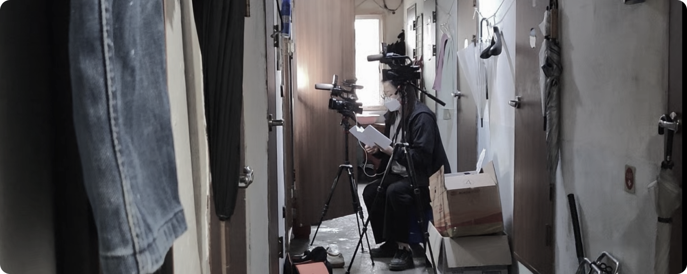
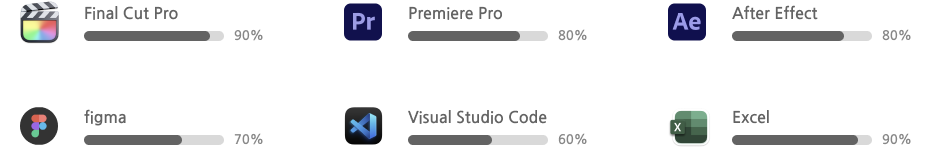

포트폴리오

처음으로 PD가 되길 잘했다고 생각했다.
인생의 짙은 향기로 가득한 쪽방촌 복도에 작은 캠코더 두대와
조명을 설치하고, 몸 하나 누이기 어려운 한평 남짓 공간에 삶을
누이는 이들의 이야기를 담던 날
벽면 군데 군데 붙어있는 바퀴벌레 퇴치제, 그 벽면 줄줄이
걸려있는 빨래들, 공존할 수 없어보이는 것들이 아이러니하게
공존하고 있던 공간
그럼에도 불구하고 설치된 카메라에 담겨있는 이야기는 공간에
비례하지 않는 무한한 꿈의 이야기, 무엇으로도 설명할 수 없는
내 인생 최고의 날이었다.
그렇게 ‘보이는 것으론 설명할 수 없는 삶의 이야기를 영상에 잘
담아내는 사람이 되어야지’ 생각했다.
2022년 10월 16일 일기 중
프로필
경력 및 자격
활동이력
사용가능 장비
및 스킬
및 스킬
이름 | 배보경
생년월일 | 1988년 2월 2일
연락처 | 010-4345-4123
최종학력 | 초대졸
E-Mail | qoqhrud2001@naver.com
Instagram | skyblue_.bo
생년월일 | 1988년 2월 2일
연락처 | 010-4345-4123
최종학력 | 초대졸
E-Mail | qoqhrud2001@naver.com
Instagram | skyblue_.bo

전 | 삼창스포츠 근무
전 | (주)기독교텔레비전 대구지사 근무
전 | 씨티에스엔 본사 제작본부 근무
현 | 프리랜서
2005년 09월 | 정보기술자격 ITQ 인증시험 엑셀 A등급 한국생산성본부 발급
2016년 1월 | 자동차운전면허증 1종 보통 경찰청 발급
전 | (주)기독교텔레비전 대구지사 근무
전 | 씨티에스엔 본사 제작본부 근무
현 | 프리랜서
- 박경임애도상담연구소 강연 영상 제작
- 그린컴퓨터아트학원 대구캠퍼스 멀티미디어 6개월 과정 진행[11월 28일 수료 예정]
[프리미어 프로, 에프터 이펙트, 코딩, 피그마 과정]
2005년 09월 | 정보기술자격 ITQ 인증시험 엑셀 A등급 한국생산성본부 발급
2016년 1월 | 자동차운전면허증 1종 보통 경찰청 발급
2015~2020년 | 대구 경북지역 단신, 기획 뉴스 83편 제작 및
보도
2015~2020년 | 지역 행사 중계 30회 이상 참여 | 카메라 감독 및 자막 연출
2021년~2022년 | 스튜디오 + VCR(세미다큐) 50분 방영 44편 제작
2021년 5월 | 7000미라클 '코로나19 인도 피해 선교사 돕기' 1시간 특집방송 총연출
2021년 6월 | 무인동력비행장치 - 드론 4종 교육수료 | 한국교통안전공단 발급
2022년 3월 | 7000미라클 '울진 산불 피해 교회 돕기' 1시간 특집방송 총연출
2022년 4월 | '부활절 퍼레이드 The Miracle' 3시간 생방송 자막 연출
2022년 9월 | 7000미라클 '포항 힌남노 태풍 피해 교회 돕기' 1시간 특집방송 총연출
2022년 12월 | '성탄특집 코리아 퍼레이드' 3시간 생방송 자막 연출
2023년 5월 3일 ~ 6월 3일 | 2023 하동세계차문화엑스포 2행사장 카메라 감독
2024년 1월 24일 ~ 2월 18일 | 아프리카 케냐 나록 선교지 릴스 기획 제작
2024년 10월 | '제11회 칠곡낙동강평화축제', '2024 경상북도민의 날' 카메라 감독
2015~2020년 | 지역 행사 중계 30회 이상 참여 | 카메라 감독 및 자막 연출
2021년~2022년 | 스튜디오 + VCR(세미다큐) 50분 방영 44편 제작
2021년 5월 | 7000미라클 '코로나19 인도 피해 선교사 돕기' 1시간 특집방송 총연출
2021년 6월 | 무인동력비행장치 - 드론 4종 교육수료 | 한국교통안전공단 발급
2022년 3월 | 7000미라클 '울진 산불 피해 교회 돕기' 1시간 특집방송 총연출
2022년 4월 | '부활절 퍼레이드 The Miracle' 3시간 생방송 자막 연출
2022년 9월 | 7000미라클 '포항 힌남노 태풍 피해 교회 돕기' 1시간 특집방송 총연출
2022년 12월 | '성탄특집 코리아 퍼레이드' 3시간 생방송 자막 연출
2023년 5월 3일 ~ 6월 3일 | 2023 하동세계차문화엑스포 2행사장 카메라 감독
2024년 1월 24일 ~ 2월 18일 | 아프리카 케냐 나록 선교지 릴스 기획 제작
2024년 10월 | '제11회 칠곡낙동강평화축제', '2024 경상북도민의 날' 카메라 감독



카테고리
세미다큐
해외현지영상
뉴스
재난영상
릴스
파이널컷
프리미어프로
에프터이펙트
코딩
✔️영상을 시청하기 전, 먼저 읽어주세요
이전 직장 수익관련 영상은 개인채널로 이동시키지 않았습니다.
썸네일 위쪽 제목을 클릭하셔서 유튜브로 이동 후, 시청하시면 좋은 화질로 시청 가능합니다.
영상 말미 스탭 스크롤을 통해 연출자 명을 확인하실 수 있습니다.
영상을 시청하는 시간이 행복하고 따뜻해지기를 바랍니다. 감사합니다 😀
| 두란노 성경교실 인바이블 📖 | 전체 기여도 80% [스튜디오 연출, 스튜디오(자막, 효과 제외) + 현지 VCR 편집(자막, 효과 포함)]
| 7000미라클 📷 [세미 다큐]전체 기여도 90% [스튜디오 연출, VCR 촬영, 편집 100% 기여 - 오디오, 자막 제외]
| 재난 및 특집 🔥전체 기여도 90% [스튜디오 연출, VCR 촬영, 편집 100% 기여 - 오디오, 자막 제외]
| 뉴스 🕘전체 기여도 95% [촬영, 편집, 기사작성, 더빙, 오디오 100% 기여 - 자막, CG 제외]
| 핸드폰 영상 📱[릴스]전체 기여도 100% [촬영, 편집, 오디오, 자막]
| ETC 💻전체 기여도 [항목별 링크 세부 기재]